lecture 5, 7, 13 ,17 을 리뷰 했는데,,, 17강 밖에 안남아있다…T.T
The Limits of Single-task Learning
- Great performance improvements in recent years given
- dataset
- task
- model
- metric
- Models typically start from ranbdom or are only partly pre-trained
Pre-training and sharing knowledge is great!
- Computer Vision
- ImageNet + CNN이 큰 성공을 거두었음
- Classification task가 과거에 큰 장벽이었음
- 이 문제가 해결되고 많은 문제들을 푸는 것이 가능해짐
- Natural Language Processing
- Word2Vec, Glove
- 최근 CoVe, ELMo, BERT 성공을 거두기 시작함
Why has weight&model sharing not happened as much in NLP?
- NLP는 많은 종류의 추론이 요구됨
- logical, linguistic, emotional, visual
- Short and long term memory가 요구됨
- NLP는 중간 단계 또는 분리된 Task로 많이 나누어져 있음
- 하나의 Unsupervised Task가 전체 문제를 해결할 수 없음
- 언어는 현실적으로 분명한 Supervision이 필요함
Why a unified multi-task model for NLP
- Multi-task learning은 General NLP system이 넘어야할 장벽임
- 하나의 통합된 모델은 지식을 어떻게 전달할지 결정 가능
- Domain adaptation, weight sharing, transfer and zero shot learning
- 하나의 통합된 Multi-task 모델은
- 새로운 task가 주어졌을 때 쉽게 적응할 수 있음
- 실제 production을 위해 deploy하는 것이 매우 간단해짐
- 더 많은 사람들이 새로운 task를 해결할 수 있도록 도와줌
- 잠재적으로 Continual learning으로 나아갈 수 있음
- 모든 프로젝트를 계속 다시 시작하게 된다면 자연 언어의 복잡성을 점점 더 많이 포함하는 하나의 모델에 도달하지 못함
- 인공지능이 대화를 가능하게 하는 task를 진행할 때 사람의 언어처럼 순차적으로 처리하는 것 만큼 비효율적인 것은 없음. 컴퓨터가 인간의 언어를 supervision하지 않다면 훨씬 더많은 언어로 의사소통 가능.
How to express many NLP tasks in the same framework?
- Sequence tagging
- Named Entity Recognition, aspect specific sentiment
- Text classification
- Dialogue state tracking, sentiment classification
- Seq2seq
- Machine Translation, Summarization, Question Answering
Three equivalent Supertasks of NLP
- Language Modeling
- 다음 단어를 예측하는 것은 질문의 일종이다.
- Question Answering
- 말 그대로 Question & Answering 이다.
- Dialogue System
- 질문 답변, 답변에 대한 답변 형태이다.
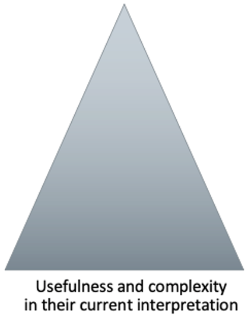
The Natural Language Decathlon(decaNLP)
- The Natural Language Decathlon : Multitask Learning as Question Answering
- 10개의 NLP Task를 하나의 Question Answering모델 학습만으로 풀 수 있도록 디자인
- 이를 위해 모든 데이터 셋에 대하여 question, context, answer 형태로 전처리
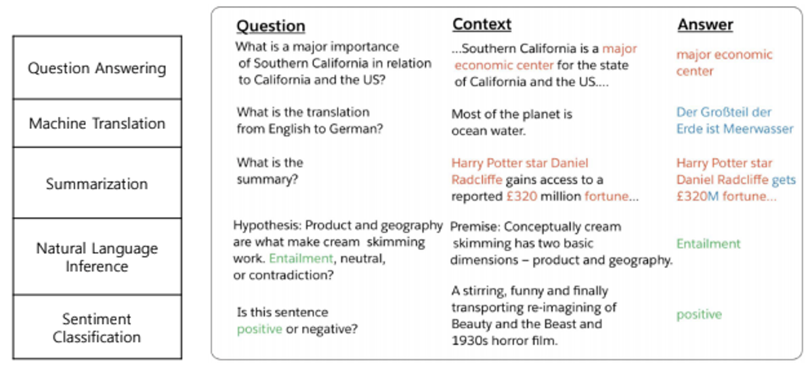
Multitask Question Answering Network(MQAN)
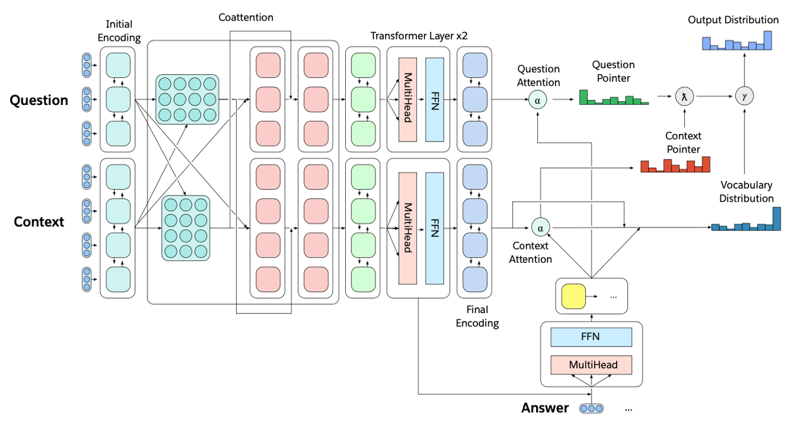
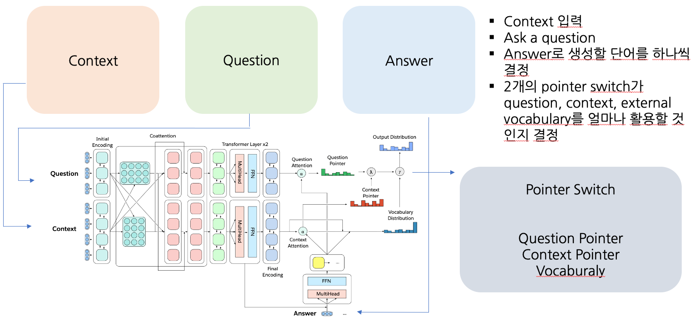
- Fixed Glove+Character n-gram embeddings -> Linear -> Shared BiLSTM with skip connection
- Attention summations from one sequence to the other and back again with skip connections
- Separate BiLSTMs to reduce dimensionality, two transformer layers, another BiLSTM
- Auto-regressive decoder :
- Fixed GloVe, character n-gram embeddings
- Two transformer layers
- LSTM Layers (attend last 3 layers of encoder)
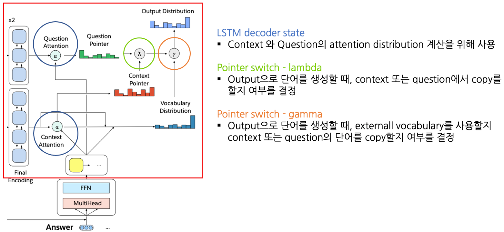
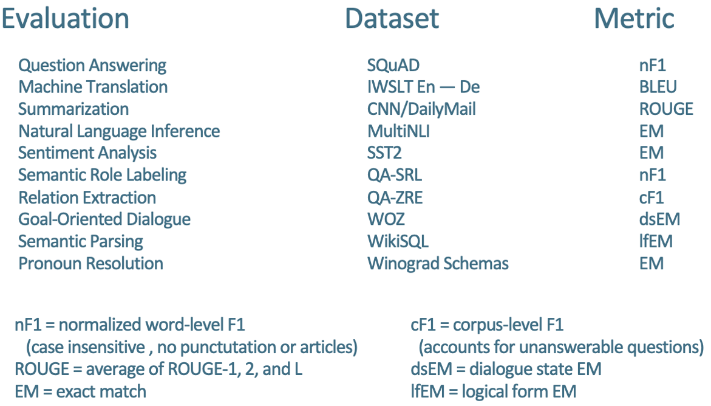
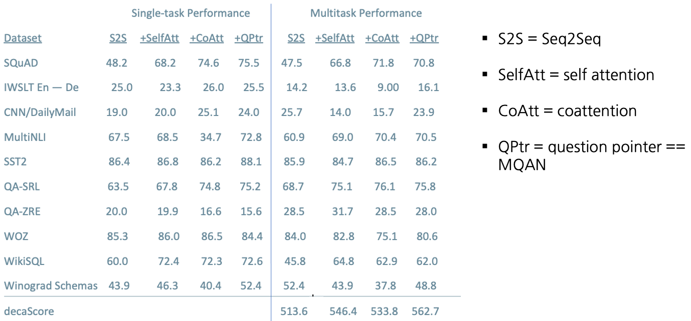
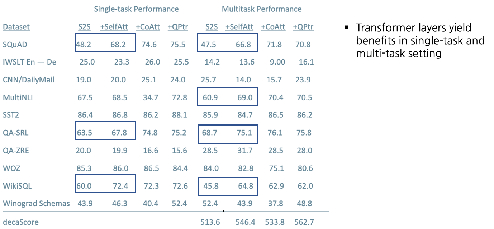
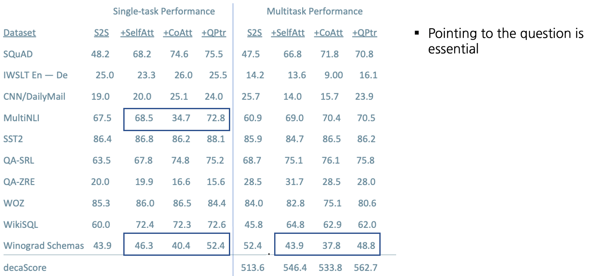
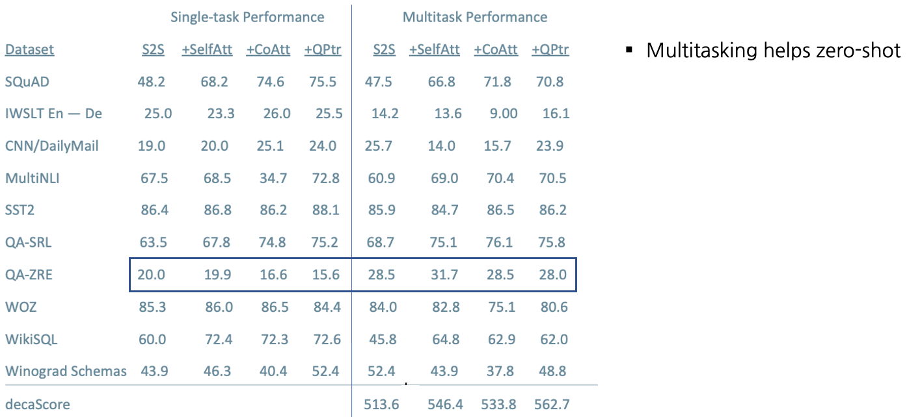
Training Strategies: Fully Joint
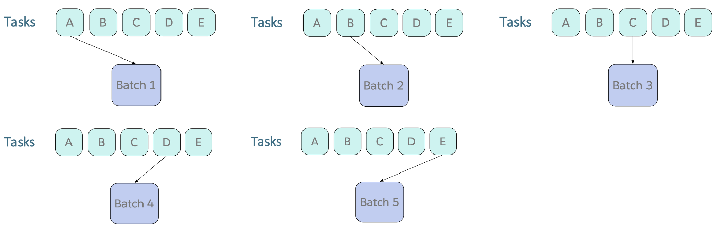
- Curriculum learning : 모델 학습시 전체 데이터를 한번에 학습시키지 않고 쉬운것->어려운 것 순서로 학습함
- Batch를 Sampling할 때, Fixed order로 계속 Round Robin하여 수집함
- 많은 양이 돌아 Converge되는 Task들은 잘 동작하지 않음
Training Strategies: Anti-Curriculum Pre-training
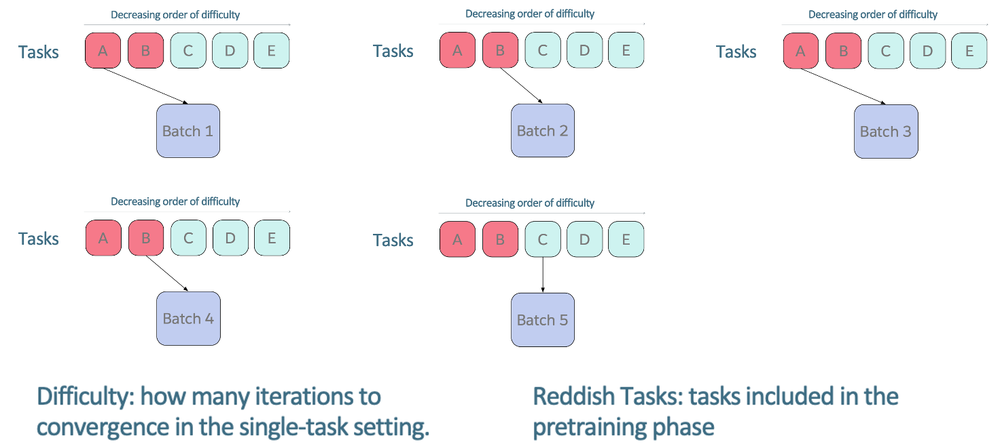
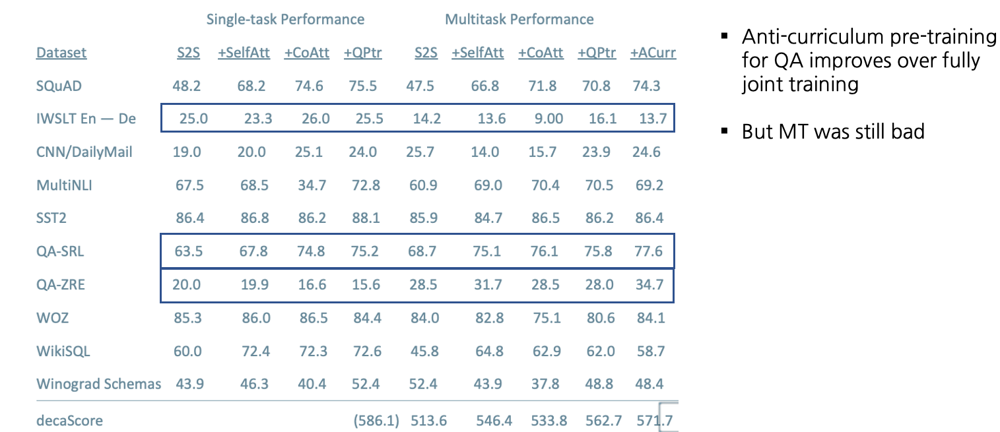
Training Strategies: CoVe
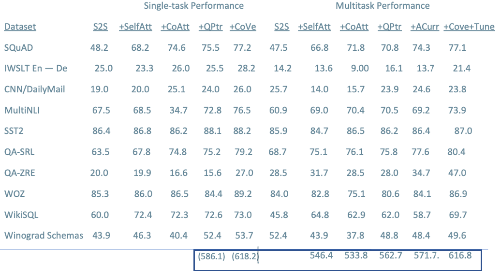
What’s next for NLP?
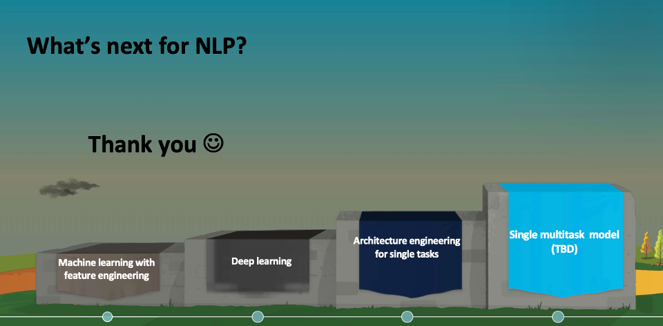